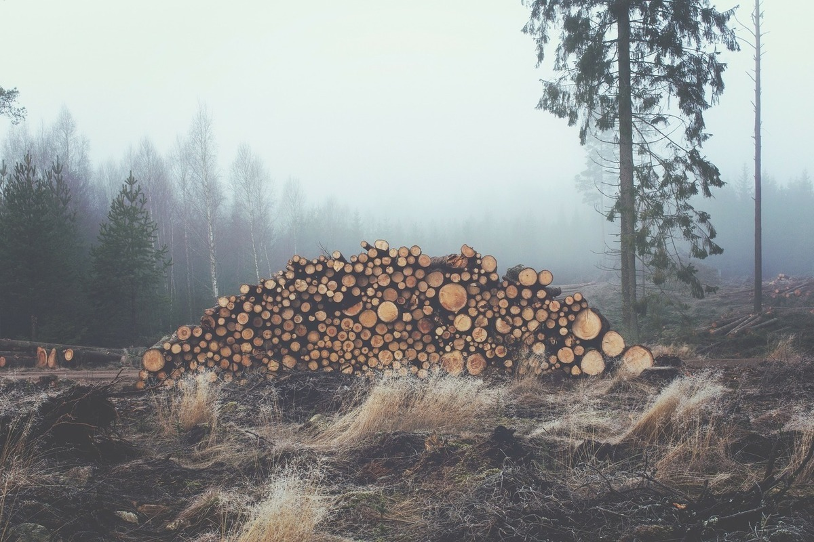
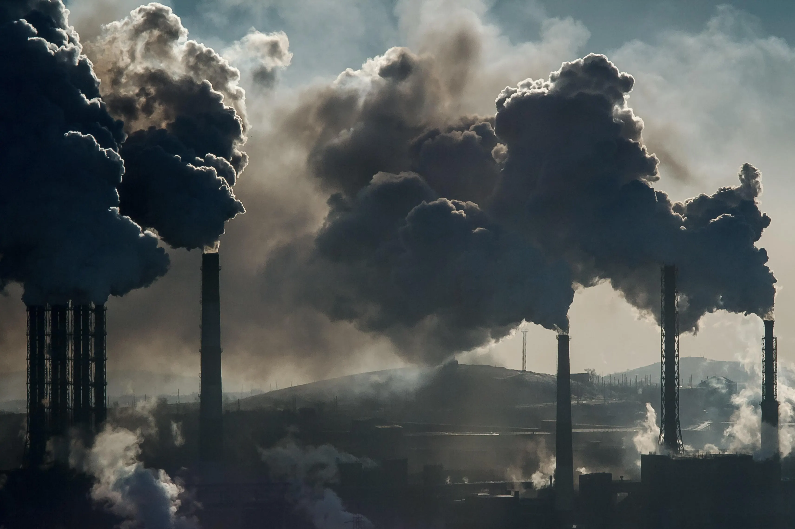
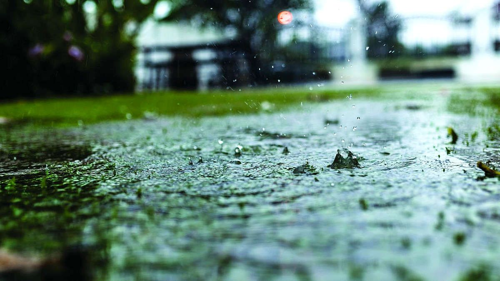
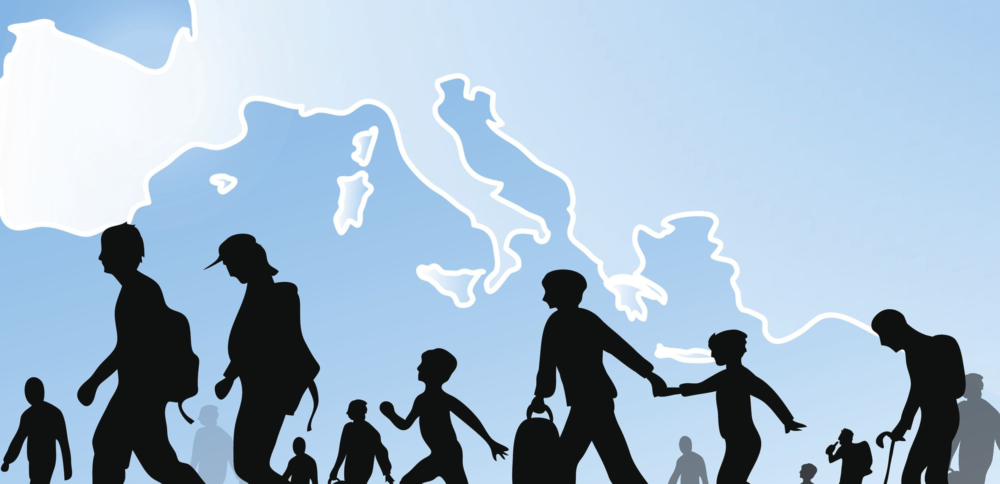

Темы
.png)
Сокращение площади лесов
Исчезновение лесов – это мировая экологическая проблема. Обезлесивание планеты приводит к резким температурным перепадам, изменениям в количестве выпадающих осадков и скорости ветров. Сжигание лесов вызывает загрязнение воздуха окисью углерода, его выбрасывается больше, чем поглощается. Также при сведении лесов поступает в воздух углерод, скапливающийся в почве под деревьями. Что такое обезлесение? Процесс превращения лесных угодий в поля, пашни, карьеры, ЛЭП, города и другие объекты, где отсутствуют лесные экосистемы, называется обезлесением. К обезлесению приводит чрезмерная вырубка лесов, выжигание под пашню, большой вред наносят кислотные дожди, лесные пожары, насекомые-вредители. Каждый год площадь лесов сокращается на 2–3 миллиона гектаров, что ведет к обезлесению.
Основные причины сокращения лесов:
- промышленная заготовка древесины;
- сведение лесов с целью освобождения площадей для нужд сельского хозяйства;
- дорожное и жилищное строительство.
Последствия вырубки лесов:
- сокращение водоносности рек, высыхание озёр, понижение уровня грунтовых вод;
- усиление эрозии почв;
- более засушливый и континентальный климат;
- увеличение выбросов углекислого газа в атмосферу и усиление парникового эффекта;
- исчезновение видов живых организмов.
Массовая вырубка лесов приводит к гибели животных или полному исчезновению многих видов. Лесные растения используются в медицине, на основе их свойств разрабатываются новые препараты. Здоровый лес является важным фактором влияния на распределение воды в почве, не допускает заболачивания и сохраняет нужный уровень грунтовых вод, препятствуя иссушению площадей. Леса, испаряя влагу, создают условия для концентрации облачности и возвращения испаряемой воды в виде дождя. От уничтожения лесов пострадает все человечество, так как не будет природного фильтра, очищающего воздух.

Загрязнение морей и океанов
Загрязнение морей и океанов — глобальная проблема, которая требует безотлагательного решения. Вот некоторые причины загрязнения:
- Избыток углекислого газа, который нарушает баланс химических соединений в океанических экосистемах и повышает кислотность вод.
- Стоки удобрений с полей, которые обогащают моря питательными соединениями и приводят к появлению «мертвых» зон.
- Химические отходы бытовых хозяйств и промышленности, которые накапливаются в телах животных и передаются по пищевой цепи.
- Добыча полезных ископаемых и разливы нефти.
- Пластиковое загрязнение, которое приводит к образованию островов из пластиковых отходов в Мировом океане.
Охрана морских экосистем и строгий контроль антропогенной нагрузки должны стать приоритетными целями всего человечества. Реакция Мирового океана на загрязнение или последствия загрязнения. Мировой океан реагирует на загрязнение по-разному. Экологами разных стран наблюдается:
- постепенное исчезновение различных представителей флоры и фауны;
- цветение воды из-за размножения водорослей, приспособившихся к загрязнению и питающихся промышленными отходами;
- исчезновение глобальных климатических явлений, например, течения Эль-Ниньо;
- появление мусорных островов;
- повышение температуры воды в Мировом океане.
Все эти реакции могут привести к сокращению выработки кислорода Мировым океаном, сокращению его пищевой ресурсности, привести к масштабным изменениям климата на планете, к повышению риска развития засух, наводнений, формирования цунами. Большинство экологов воспринимают загрязнение Мирового океана как глобальную экологическую проблему. У Мирового океана есть и механизмы самоочищения вод: химический, биологический, механический, но в результате их запуска загрязняется дно океана и тысячами гибнут его обитатели. Охрана Мирового океана Серьезное загрязнение вод Мирового океана и уменьшения его ресурсности стало очевидно и понятно в последний период “холодной войны”. С 70-ых годов XX века работают различные региональные программы, объединяющие более 150 стран и обеспечивающие защиту вод морей и океанов. В 1982 году на конференции ООН была принята конвенция по морскому праву.

Загрязнение атмосферы:
Загрязнение атмосферы — это глобальная проблема, которая заключается в наличии вредных веществ в атмосфере. Источниками загрязнения могут быть автомобили, заводы, электростанции, а также природные явления, такие как лесные пожары и извержения вулканов. Загрязнение воздуха наносит огромный ущерб окружающей среде и здоровью людей. Оно может вызывать респираторные болезни, болезни сердечно-сосудистой системы, диабет и онкологические заболевания. Для решения проблемы необходимы коллективные усилия. Во всём мире страны реализуют политику по сокращению выбросов, продвижению экологически чистой энергетики и улучшению стандартов качества воздуха. Вечерами и по выходным миллионы людей отправляются в парки, лес, на природу. Просто подышать свежим воздухом. По данным ЮНЕП (Программа ООН по окружающей среде), загрязнение воздуха — одна из самых опасных экологических угроз. Почему так? Во-первых, существует огромное количество источников загрязнения: это и обычная печка у дедушки в деревне, и любой завод, и аже ваш новенький автомобиль, который ездит на «экотопливе» — более чистом, но все равно загрязняющем воздух. Во-вторых, эта проблема неосязаема, но несет реальные риски. Как правило, сложно заметить, что воздух, которым мы дышим, «какой-то не такой». Тем временем, вредные вещества, которыми он насыщен, неизменно попадают в организм, вызывая различные негативные процессы. И этим дело не ограничивается. Основные вредные вещества, которые попадают в атмосферу:
- Оксид углерода («угарный газ»)
- Двуокись углерода (углекислый газ)
- Диоксид серы (сернистый ангидрид)
- Оксиды и диоксиды азота.
- Озон
- Углеводород
- Свинец
- Промышленная пыль.
Также существуют факторы антропогенного характера, такие как испытания ядерного оружия, работа теплоэлектростанций, выбросы ядовитых газов с предприятий, работа котельных, разложение мусора и отходов на свалках, пожары, возникающие по вине людей, выхлопные газы транспортных средств, полёты реактивных летательных аппаратов.

Виды пластика:
Пластик окружает нас повсюду: в упаковке, игрушках, одежде и даже в медицине. Существует множество видов пластика, каждый из которых имеет свои уникальные свойства. Например, полиэтилен – самый распространенный вид, который мы встречаем в пакетах и бутылках. Он легкий и водонепроницаемый. Полипропилен, в свою очередь, используется для производства контейнеров и текстиля благодаря своей прочности и устойчивости к химическим веществам.
А вот полистирол часто встречается в одноразовой посуде и упаковке для еды. Интересно, что некоторые виды пластика можно перерабатывать несколько раз, что помогает уменьшить количество отходов. Однако не все пластики поддаются переработке, и это создает серьезные экологические проблемы. Зная о различных видах пластика, мы можем делать более осознанный выбор в повседневной жизни!
Термоупорный пластик — это удивительный материал, который находит применение в самых разных сферах нашей жизни. В отличие от обычных пластиков, термоупорные виды способны выдерживать высокие температуры без изменения своих свойств. Это делает их незаменимыми в таких отраслях, как автомобилестроение, электроника и даже космическая индустрия.
Среди популярных видов термоупорного пластика можно выделить полиамиды, которые известны своей прочностью и стойкостью к химическим воздействиям. Они часто используются в производстве деталей для автомобилей и бытовой техники. Поликарбонаты — еще один интересный представитель, обладающий высокой прозрачностью и ударопрочностью. Их применяют для создания защитных экранов и оптики.
Не стоит забывать и о фенолформальдегидных смолах, которые находят свое применение в производстве мебели и строительных материалов. Эти пластики не только устойчивы к высоким температурам, но и обладают отличной износостойкостью.
Таким образом, термоупорные пластики играют важную роль в современном мире, обеспечивая безопасность и долговечность многих изделий. Их уникальные свойства открывают новые горизонты для технологий будущего!

Пластик везде:
Пластик везде. Это не просто фраза, а реальность, с которой сталкивается человечество на каждом шагу. Мы видим пластиковые упаковки, бутылки и пакеты повсюду — на улицах городов, в парках и даже в самых удаленных уголках природы. Но где именно можно встретить пластик в природе?
Исследования показывают, что пластиковые отходы находят даже в самых труднодоступных местах: от дна океанов до высокогорных озер. Например, недавние экспедиции в Антарктиду выявили микропластик даже в ледниках! Пластиковые частицы попадают в воду и почву, загрязняя экосистемы.
Влияние пластика на животных также вызывает серьезную обеспокоенность. Многие морские обитатели путают пластиковые предметы с пищей. Черепахи могут съесть пластиковые пакеты, приняв их за медуз. Это приводит к серьезным проблемам со здоровьем: у животных возникают кишечные закупорки или отравления. Птицы тоже страдают от пластика; они часто собирают мелкие кусочки для своих гнезд или кормят ими своих птенцов, что может привести к гибели молодняка.
Пластик не только угрожает животным, но и наносит вред окружающей среде в целом. Он разлагается очень медленно — некоторые виды пластика могут оставаться в природе до 1000 лет! Это означает, что все те бутылки и упаковки, которые мы выбрасываем сегодня, будут лежать на свалках или загрязнять природу еще много поколений вперед. К тому же при разложении пластика выделяются токсичные вещества, которые проникают в почву и водоемы, нанося ущерб растениям и микроорганизмам.
К сожалению, масштабы проблемы огромны: по данным различных исследований, ежегодно в океан попадает около 8 миллионов тонн пластика! Это создает настоящие "пластиковые острова", такие как Великое тихоокеанское мусорное пятно — гигантское скопление мусора размером с Техас.
Каждый из нас может внести свой вклад в решение этой проблемы: использовать многоразовые сумки вместо пластиковых пакетов, выбирать товары без упаковки или перерабатывать использованный пластик. Важно помнить: будущее нашей планеты зависит от наших действий сегодня.
Группа волантеров:
Дорогие друзья!
Приглашаем всех желающих стать волонтерами Клуба "Волонтеры Подмосковья".
"Волонтер" - в переводе с французского означает доброволец.
Волонтеры - это люди с активной жизненной позицией, которые стремятся приложить свои силы и знания для того, чтобы сделать окружающий мир лучше.
Какими качествами нужно обладать:
- трудолюбием и милосердием
- бескорыстностью
Взамен волонтер получает не только благодарность и признательность за свой труд, но и:
- новые знания и опыт;
- новых друзей;
Что нужно сделать, что бы попасть в группу волонтеров?
- Нажать на эту ссылку
- Зарегистрироваться на сайте "Волонтеры Подмосковья"
- Выбрать, в какой сфере вы будете полезны
- Вот и все, регистрация окончена, пора помогать окружающему миру!
